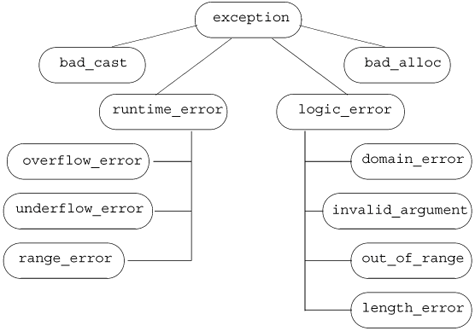

17.1. Exception HandlingException handling allows independently developed parts of a program to communicate about and handle problems that arise during execution of the program. One part of the program can detect a problem that that part of the program cannot resolve. The problem-detecting part can pass the problem along to another part that is prepared to handle what went wrong.
In C++, exception handling relies on the problem-detecting part throwing an object to a handler. The type and contents of that object allow the two parts to communicate about what went wrong. Section 6.13 (p. 215) introduced the basic concepts and mechanics of using exceptions in C++. In that section, we hypothesized that a more complex bookstore application might use exceptions to communicate about problems. For example, the Sales_item addition operator might throw an exception if the isbn members of its operands didn't match: // throws exception if both objects do not refer to the same isbn Sales_item operator+(const Sales_item& lhs, const Sales_item& rhs) { if (!lhs.same_isbn(rhs)) throw runtime_error("Data must refer to same ISBN"); // ok, if we're still here the ISBNs are the same so it's okay to do the addition Sales_item ret(lhs); // copy lhs into a local object that we'll Those parts of the program that added Sales_item objects would use a TRy block in order to catch an exception if one occured:
// part of the application that interacts with the user
Sales_item item1, item2, sum;
while (cin >> item1 >> item2) { // read two transactions
try {
sum = item1 + item2; // calculate their sum
// use sum
} catch (const runtime_error &e) {
cerr << e.what() << " Try again.\n"
<< endl;
}
}
In this section we'll expand our coverage of these basics and cover some additional exception-handling facilities. Effective use of exception handling requires understanding what happens when an exception is thrown, what happens when it is caught, and the meanings of the objects used to communicate what went wrong. 17.1.1. Throwing an Exception of Class TypeAn exception is raised by throwing an object. The type of that object determines which handler will be invoked. The selected handler is the one nearest in the call chain that matches the type of the object. Exceptions are thrown and caught in ways that are similar to how arguments are passed to functions. An exception can be an object of any type that can be passed to a nonreference parameter, meaning that it must be possible to copy objects of that type. Recall that when we pass an argument of array or function type, that argument is automatically converted to an pointer. The same automatic conversion happens for objects that are thrown. As a consequence, there are no exceptions of array or function types. Instead, if we throw an array, the thrown object is converted to a pointer to the first element in the array. Similarly, if we throw a function, the function is converted to a pointer to the function (Section 7.9, p. 276). When a throw is executed, the statement(s) following the throw are not executed. Instead, control is transferred from the tHRow to the matching catch. That catch might be local to the same function or might be in a function that directly or indirectly called the function in which the exception occurred. The fact that control passes from one location to another has two important implications:
Because local storage is freed while handling an exception, the object that is thrown is not stored locally. Instead, the throw expression is used to initialize a special object referred to as the exception object. The exception object is managed by the compiler and is guaranteed to reside in space that will be accessible to whatever catch is invoked. This object is created by a throw, and is initialized as a copy of the expression that is thrown. The exception object is passed to the corresponding catch and is destroyed after the exception is completely handled.
Exception Objects and InheritanceIn practice, many applications throw expressions whose type comes from an inheritance hierarchy. As we'll see in Section 17.1.7 (p. 697), the standard exceptions (Section 6.13, p. 215) are defined in an inheritance hierarchy. What's important to know at this point is how the form of the tHRow expression interacts with types related by inheritance.
Ordinarily, the fact that the object is thrown using its static type is not an issue. When we throw an exception, we usually construct the object we are going to throw at the throw point. That object represents what went wrong, so we know the precise exception type. Exceptions and PointersThe one case where it matters that a throw expression throws the static type is if we dereference a pointer in a throw. The result of dereferencing a pointer is an object whose type matches the type of the pointer. If the pointer points to a type from an inheritance hierarchy, it is possible that the type of the object to which the pointer points is different from the type of the pointer. Regardless of the object's actual type, the type of the exception object matches the static type of the pointer. If that pointer is a base-class type pointer that points to a derived-type object, then that object is sliced down (Section 15.3.1, p. 577); only the base-class part is thrown. A problem more serious than slicing the object may arise if we throw the pointer itself. In particular, it is always an error to throw a pointer to a local object for the same reasons as it is an error to return a pointer to a local object (Section 7.3.2, p. 249) from a function. When we throw a pointer, we must be certain that the object to which the pointer points will exist when the handler is entered. If we throw a pointer to a local object and the handler is in another function, then the object to which the pointer points will no longer exist when the handler is executed. Even if the handler is in the same function, we must be sure that the object to which the pointer points exists at the site of the catch. If the pointer points to an object in a block that is exited before the catch, then that local object will have been destroyed before the catch.
17.1.2. Stack UnwindingWhen an exception is thrown, execution of the current function is suspended and the search begins for a matching catch clause. The search starts by checking whether the tHRow itself is located inside a try block. If so, the catch clauses associated with that try are examined to see if one of them matches the thrown object. If a matching catch is found, the exception is handled. If no catch is found, the current function is exitedits memory is freed and local objects are destroyedand the search continues in the calling function. If the call to the function that threw is in a try block, then the catch clauses associated with that try are examined. If a matching catch is found, the exception is handled. If no matching catch is found, the calling function is also exited, and the search continues in the function that called this one. This process, known as stack unwinding, continues up the chain of nested function calls until a catch clause for the exception is found. As soon as a catch clause that can handle the exception is found, that catch is entered, and execution continues within this handler. When the catch completes, execution continues at the point immediately after the last catch clause associated with that TRy block. Destructors Are Called for Local ObjectsDuring stack unwinding, the function containing the throw, and possibly other functions in the call chain, are exited prematurely. In general, these functions will have created local objects that ordinarily would be destroyed when the function exited. When a function is exited due to an exception, the compiler guarantees that the local objects are properly destroyed. As each function exits, its local storage is freed. Before releasing the memory, any local object that was created before the exception occurred is destroyed. If the local object is of class type, the destructor for this object is called automatically. As usual, the compiler does no work to destroy an object of built-in type.
If a block directly allocates a resource, and the exception occurs before that resource is freed, that resource will not be freed during stack unwinding. For example, a block might dynamically allocate memory through a call to new. If the block exits due to an exception, the compiler does not delete the pointer. The allocated memory will not be freed. Resources allocated by an object of class type generally will be properly freed. Destructors for local objects are run; resources allocated by class-type objects ordinarily are freed by their destructor. Section 17.1.8 (p. 700) describes a programming technique that uses classes to manage resource allocation in the face of exceptions. Destructors Should Never tHRow ExceptionsDestructors are often executed during stack unwinding. When destructors are executing, the exception has been raised but not yet handled. It is unclear what should happen if a destructor itself throws a new exception during this process. Should the new exception supersede the earlier exception that has not yet been handled? Should the exception in the destructor be ignored? The answer is that while stack unwinding is in progress for an exception, a destructor that throws another exception of its own that it does not also handle, causes the library terminate function is called. Ordinarily, terminate calls abort, forcing an abnormal exit from the entire program. Because terminate ends the program, it is usually a very bad idea for a destructor to do anything that might cause an exception. In practice, because destructors free resources, it is unlikely that they throw exceptions. The standard library types all guarantee that their destructors will not raise an exception. Exceptions and ConstructorsUnlike destructors, it is often the case that something done inside a constructor might throw an exception. If an exception occurs while constructing an object, then the object might be only partially constructed. Some of its members might have been initialized, and others might not have been initialized before the exception occurs. Even if the object is only partially constructed, we are guaranteed that the constructed members will be properly destroyed. Similarly, an exception might occur when initializing the elements of an array or other container type. Again, we are guaranteed that the constructed elements will be destroyed. Uncaught Exceptions Terminate the ProgramAn exception cannot remain unhandled. An exception is an important enough event that the program cannot continue executing normally. If no matching catch is found, then the program calls the library terminate function. 17.1.3. Catching an ExceptionThe exception specifier in a catch clause looks like a parameter list that contains exactly one parameter. The exception specifier is a type name followed by an optional parameter name. The type of the specifier determines what kinds of exceptions the handler can catch. The type must be a complete type: It must either be a built-in type or a programmer-defined type that has already been defined. A forward declaration for the type is not sufficient. An exception specifier can omit the parameter name when a catch needs to know only the type of the exception in order to handle it. If the handler needs information beyond what type of exception occurred, then its exception specifier will include a parameter name. The catch uses the name to get access to the exception object. Finding a Matching HandlerDuring the search for a matching catch, thecatch that is found is not necessarily the one that matches the exception best. Instead, the catch that is selected is the first catch found that can handle the exception. As a consequence, in a list of catch clauses, the most specialized catch must appear first. The rules for when an exception matches a catch exception specifier are much more restrictive than the rules used for matching arguments with parameter types. Most conversions are not allowedthe types of the exception and the catch specifier must match exactly with only a few possible differences:
No other conversions are allowed when looking for a matching catch. In particular, neither the standard arithmetic conversions nor conversions defined for class types are permitted. Exception SpecifiersWhen a catch is entered, the catch parameter is initialized from the exception object. As with a function parameter, the exception-specifier type might be a reference. The exception object itself is a copy of the object that was thrown. Whether the exception object is copied again into the catch site depends on the exception-specifier type. If the specifier is not a reference, then the exception object is copied into the catch parameter. The catch operates on a local copy of the exception object. Any changes made to the catch parameter are made to the copy, not to the exception object itself. If the specifier is a reference, then like a reference parameter, there is no separate catch object; the catch parameter is just another name for the exception object. Changes made to the catch parameter are made to the exception object. Exception Specifiers and InheritanceLike a parameter declaration, an exception specifier for a base class can be used to catch an exception object of a derived type. Again, like a parameter declaration, the static type of the exception specifier determines the actions that the catch clause may perform. If the exception object thrown is of derived-class type but is handled by a catch that takes a base-class type, then the catch cannot use any members that are unique to the derived type.
If the catch parameter is a reference type, then the catch object accesses the exception object directly. The static type of the catch object and the dynamic type of the exception object to which it refers might differ. If the specifier is not a reference, then the catch object is a copy of the exception object. If the catch object in an object of the base type and the exception object has derived type, then the exception object is sliced down (Section 15.3.1, p. 577) to its base-class subobject. Moreover, as we saw in Section 15.2.4 (p. 566), objects (as opposed to references) are not polymorphic. When we use a virtual function on an object rather than through a reference, the object's static and dynamic type are the same; the fact that the function is virtual makes no difference. Dynamic binding happens only for calls through a reference or pointer, not calls on an object. Ordering of Catch Clauses Must Reflect Type HierarchyWhen exception types are organized in class hierarchies, users may choose the level of granularity with which their applications will deal with an exception. For example, an application that merely wants to do cleanup and exit might define a single try block that encloses the code in main with a catch such as the following:
catch(exception &e) {
// do cleanup
// print a message
cerr << "Exiting: " << e.what() << endl;
size_t status_indicator = 42; // set and return an
return(status_indicator); // error indicator
}
Other programs with more rigorous uptime requirements might need finer control over exceptions. Such applications will clear whatever caused the exception and continue processing. Because catch clauses are matched in the order in which they appear, programs that use exceptions from an inheritance hierarchy must order their catch clauses so that handlers for a derived type occurs before a catch for its base type.
17.1.4. RethrowIt is possible that a single catch cannot completely handle an exception. After some corrective actions, a catch may decide that the exception must be handled by a function further up the chain of function calls. A catch can pass the exception out to another catch further up the list of function calls by rethrowing the exception. A rethrow is a throw that is not followed by a type or an expression:
throw;
An empty throw rethrows the exception object. An empty tHRow can appear only in a catch or in a function called (directly or indirectly) from a catch. If an empty throw is encountered when a handler is not active, terminate is called. Although the rethrow does not specify its own exception, an exception object is still passed up the chain. The exception that is thrown is the original exception object, not the catch parameter. When a catch parameter is a base type, then we cannot know the actual type thrown by a rethrow expression. That type depends on the dynamic type of the exception object, not the static type of the catch parameter. For example, a rethrow from a catch with a parameter of base type might actually tHRow an object of the derived type. In general, a catch might change its parameter. If, after changing its parameter, the catch rethrows the exception, then those changes will be propagated only if the exception specifier is a reference:
catch (my_error &eObj) { // specifier is a reference type
eObj.status = severeErr; // modifies the exception object
throw; // the status member of the exception object is severeErr
} catch (other_error eObj) { // specifier is a nonreference type
eObj.status = badErr; // modifies local copy only
throw; // the status member of the exception rethrown is unchanged
}
17.1.5. The Catch-All HandlerA function may want to perform some action before it exits with a thrown exception, even though it cannot handle the exception that is thrown. Rather than provide a specific catch clause for every possible exception, and because we can't know all the exceptions that might be thrown, we can use a catch-all catch clause. A catch-all clause has the form (...). For example:
// matches any exception that might be thrown
catch (...) {
// place our code here
}
A catch-all clause matches any type of exception. A catch(...) is often used in combination with a rethrow expression. The catch does whatever local work can be done and then rethrows the exception:
void manip() {
try {
// actions that cause an exception to be thrown
}
catch (...) {
// work to partially handle the exception
throw;
}
}
A catch(...) clause can be used by itself or as one of several catch clauses.
17.1.6. Function Try Blocks and ConstructorsIn general, exceptions can occur at any point in the program's execution. In particular, an exception might occur in a constructor, or while processing a constructor initializer. Constructor initializers are processed before the constructor body is entered. A catch clause inside the constructor body cannot handle an exception that might occur while processing a constructor initializer. To handle an exception from a constructor initializer, we must write the constructor as a function try block. A function try block lets us associate a group of catch clauses with the function as a whole. As an example, we might wrap our Handle constructor from Chapter 16 in a try block to detect a failure in new:
template <class T> Handle<T>::Handle(T *p)
try : ptr(p), use(new size_t(1))
{
// empty function body
} catch(const std::bad_alloc &e)
{ handle_out_of_memory(e); }
Notice that the keyword try precedes the member initialization list, and the compound statement of the try block encompasses the constructor function body. The catch clause can handle exceptions thrown either from within the member initialization list or from within the constructor body.
17.1.7. Exception Class HierarchiesSection 6.13 (p. 215) introduced the standard-library exception classes. What that section did not cover is that these classes are related by inheritance. The inheritance hierarchy is portrayed in Figure 17.1 on the following page. Figure 17.1. Standard exception Class Hierarchy The only operation the exception types define is a virtual member named what. That function returns a const char*. It typically returns the message used when constructing the exception object at the throw site. Because what is virtual if we catch a base-type reference, a call to the what function will execute the version appropriate to the dynamic type of the exception object. Exception Classes for a Bookstore ApplicationThe standard exception classes can be used for quite a number of applications. In addition, applications often extend the exception hierarchy by deriving additional types from exception or one of the intermediate base classes. These newly derived classes can represent exception types specific to the application domain. If we were building a real bookstore application, our classes would have been much more complex than the ones presented in this primer. One way in which they might be more elaborate would be in their handling of exceptions. In fact, we probably would have defined our own hierarchy of exceptions to represent application-specific problems that might arise. Our design might include classes such as
// hypothetical exception classes for a bookstore application
class out_of_stock: public std::runtime_error {
public:
explicit out_of_stock(const std::string &s):
std::runtime_error(s) { }
};
class isbn_mismatch: public std::logic_error {
public:
explicit isbn_mismatch(const std::string &s):
std::logic_error(s) { }
isbn_mismatch(const std::string &s,
const std::string &lhs, const std::string &rhs):
std::logic_error(s), left(lhs), right(rhs) { }
const std::string left, right;
// Section 17.1.10 (p. 706) explains the destructor and why we need one
virtual ~isbn_mismatch() throw() { }
};
Here we defined our application-specific exception types by deriving them from the standard exception classes. As with any hierarchy, we can think of the exception classes as being organized into layers. As the hierarchy becomes deeper, each layer becomes a more specific exception. For example, the first and most general layer of the hierarchy is represented by class exception. All we know when we catch an object of this type is that something has gone wrong. The second layer specializes exception into two broad categories: run-time or logic errors. Our bookstore exception classes represent an even more specialized layer. The class out_of_stock represents something that can go wrong at run time that is particular to our application. It would be used to signal that an order cannot be fulfilled. The isbn_mismatch exception is a more particular form of logic_error. In principle, a program could detect that the ISBNs don't match by calling same_isbn. Using Programmer-Defined Exception TypesWe use our own exception classes in the same way that we use one of the standard library classes. One part of the program throws an object of one of these types, and another part catches and handles the indicated problem. As an example, we might define the overloaded addition operator for our Sales_item class to throw an error of type isbn_mismatch if it detected that the ISBNs didn't match:
// throws exception if both objects do not refer to the same isbn
Sales_item
operator+(const Sales_item& lhs, const Sales_item& rhs)
{
if (!lhs.same_isbn(rhs))
throw isbn_mismatch("isbn mismatch",
lhs.book(), rhs.book());
Sales_item ret(lhs); // copy lhs into a local object that we'll return
ret += rhs; // add in the contents of rhs
return ret; // return ret by value
}
Code that uses the addition operator could then detect this error, write an appropriate error message, and continue:
// use hypothetical bookstore exceptions
Sales_item item1, item2, sum;
while (cin >> item1 >> item2) { // read two transactions
try {
sum = item1 + item2; // calculate their sum
// use sum
} catch (const isbn_mismatch &e) {
cerr << e.what() << ": left isbn(" << e.left
<< ") right isbn(" << e.right << ")"
<< endl;
}
17.1.8. Automatic Resource DeallocationIn Section 17.1.2 (p. 691) we saw that local objects are automatically destroyed when an exception occurs. The fact that destructors are run has important implication for the design of applications. It also is one (among many) reasons why we encourage the use of the standard library classes. Consider the following function:
void f()
{
vector<string> v; // local vector
string s;
while (cin >> s)
v.push_back(s); // populate the vector
string *p = new string[v.size()]; // dynamic array
// remaining processing
// it is possible that an exception occurs in this code
// function cleanup is bypassed if an exception occurs
delete [] p;
} // v destroyed automatically when the function exits
This function defines a local vector and dynamically allocates an array. Under normal execution, both the array and the vector are destroyed before the function exits. The array is freed by the last statement in the function, and the vector is automatically destroyed when the function ends. However, if an exception occurs inside the function, then the vector will be destroyed but the array will not be freed. The problem is that the array is not freed automatically. An exception that occurs after the new but before the corresponding delete leaves the array undestroyed. No matter when an exception occurs, we are guaranteed that the vector destructor is run. Using Classes to Manage Resource AllocationThe fact that destructors are run leads to an important programming technique that makes programs more exception safe. By exception safe, we mean that the programs operate correctly even if an exception occurs. In this case, the "safety" comes from ensuring that any resouce that is allocated is properly freed if an exception occurs. We can guarantee that resources are properly freed by defining a class to encapsulate the acquisition and release of a resource. This technique is often referred to as "resource allocation is initialization," often abreviated as RAII. The resource-managing class should be designed so that the constructor acquires the resource and the destructor frees it. When we want to allocate the resource, we define an object of that class type. If no exception occurs, then the resource will be freed when the object that acquired the resource goes out of scope. More importantly, if an exception occurs after the object is created but before it goes out of scope, then the compiler ensures that the object is destroyed as part of unwinding the scope in which the object was defined. The following class is a prototypical example in which the constructor acquires a resource and the destructor releases it:
class Resource {
public:
Resource(parms p): r(allocate(p)) { }
~Resource() { release(r); }
// also need to define copy and assignment
private:
resource_type *r; // resource managed by this type
resource_type *allocate(parms p); // allocate this resource
void release(resource_type*); // free this resource
};
The Resource class is a type that allocates and deallocates a resource. It holds data member(s) that represent that resource. The constructor for Resource allocates the resource, and the destructor frees it. When we use this class
void fcn()
{
Resource res(args); // allocates resource_type
// code that might throw an exception
// if exception occurs, destructor for res is run automatically
// ...
} // res goes out of scope and is destroyed automatically
the resource is automatically freed. If the function terminates normally, then the resource is freed when the Resource object goes out of scope. If the function is exited prematurely by an exception, the destructor for Resource is run by the compiler as part of the exception handling process.
17.1.9. The auto_ptr ClassThe standard-library auto_ptr class is an example of the exception-safe "resource allocation is initialization" technique described in the previous subsection. The auto_ptr class is a template that takes a single type parameter. It provides exception safety for dynamically allocated objects. The auto_ptr class is defined in the memory header.
As we'll see, auto_ptr has unusual behavior when copied or assigned. As a result, auto_ptrs may not be stored in the library container types. An auto_ptr may hold only a pointer to an object and may not be used to point to a dynamically allocated array. Using an auto_ptr to point to a dynamically allocated array results in undefined run-time behavior. Each auto_ptr is either unbound or it points to an object. When an auto_ptr points to an object, it can be said to "own" that object. When the auto_ptr goes out of scope or is otherwise destroyed, then the dynamically allocated object to which the auto_ptr points is automatically deallocated. Using auto_ptr for Exception-Safe Memory AllocationIf memory is acquired through a normal pointer and an exception occurs before a delete is executed, then that memory won't be freed automatically:
void f()
{
int *ip = new int(42); // dynamically allocate a new object
// code that throws an exception that is not caught inside f
delete ip; // return the memory before exiting
}
If an exception happens between the new and the delete, and if that exception is not caught locally, then the delete will not be executed. The memory will never be returned. If we use an auto_ptr instead, the memory will be freed automatically, even if the block is exited prematurely:
void f()
{
auto_ptr<int> ap(new int(42)); // allocate a new object
// code that throws an exception that is not caught inside f
}
// auto_ptr freed automatically when function ends
In this case, the compiler ensures that the destructor for ap is run before the stack is unwound past f.
auto_ptr Is a Template and Can Hold Pointers of Any TypeThe auto_ptr class is a template taking a single type parameter. That type names the type of the object to which the auto_ptr may be bound. Thus, we can create auto_ptrs of any type:
auto_ptr<string> ap1(new string("Brontosaurus"));
Binding an auto_ptr to a PointerIn the most common case, we initialize an auto_ptr to the address of an object returned by a new expression:
auto_ptr<int> pi(new int(1024));
This statement initializes pi to the address of the object created by the new expression. This new expression initializes that int to the value 1,024. The constructor that takes a pointer is an explicit (Section 12.4.4, p. 462) constructor, so we must use the direct form of initialization to create an auto_ptr:
// error: constructor that takes a pointer is explicit and can't be used implicitly
auto_ptr<int> pi = new int(1024);
auto_ptr<int> pi(new int(1024)); // ok: uses direct initialization
The object created by the new expression to which pi refers is deleted automatically when pi goes out of scope. If pi is a local object, the object to which pi refers is deleted at the end of the block in which pi is defined. If an exception occurs, then pi also goes out of scope. The destructor for pi will be run automatically as part of handling the exception. If pi is a global object, the object to which pi refers is deleted at the end of the program. Using an auto_ptrSuppose we wish to access a string operation. With an ordinary string pointer, we'd do the following:
string *pstr_type = new string("Brontosaurus");
if (pstr_type->empty())
// oops, something wrong
The auto_ptr class defines overloaded versions of the dereference (*) and arrow (->) operators (Section 14.6, p. 523). Because auto_ptr defines these operators, we can use an auto_ptr in some ways that are similar to using a built-in pointer:
// normal pointer operations for dereference and arrow
*ap1 = "TRex"; // assigns a new value to the object to which ap1 points
string s = *ap1; // initializes s as a copy of the object to which ap1 points
if (ap1->empty()) // runs empty on the string to which ap1 points
The primary purpose of auto_ptr is to support ordinary pointerlike behavior while ensuring that the object to which an auto_ptr object refers is automatically deleted. As we'll see, the fact that objects are automatically deleted leads to significant differences between auto_ptrs and ordinary pointers with respect to how we copy and access their address value. Copy and Assignment on auto_ptr Are Destructive Operations
Copying (or assigning) ordinary pointers copies (assigns) the address. After the copy (assignment), both pointers point to the same object. After copying (or assigning) auto_ptrs, the original points to no object and the new auto_ptr (left-hand auto_ptr) owns the underlying object:
auto_ptr<string> ap1(new string("Stegosaurus"));
// after the copy ap1 is unbound
auto_ptr<string> ap2(ap1); // ownership transferred from ap1 to ap2
When we copy or assign an auto_ptr, the right-hand auto_ptr relinquishes all responsibility for the underlying object and is reset to be an unbound auto_ptr. In our example, it is ap2 that deletes the string object, and not ap1. After the copy, ap1 no longer refers to any object. Unlike other copy or assignment operations, auto_ptr copy and assignment change the right-hand operand. As a result, both the left- and right-hand operands to assignment must be modifiable lvalues. Assignment Deletes the Object Pointed To by the Left OperandIn addition to transferring ownership from the right-hand to the left-hand operand, assignment also deletes the object to which the left-hand operand originally referredprovided that the two objects are different. As usual, self-assignment has no effect.
auto_ptr<string> ap3(new string("Pterodactyl"));
// object pointed to by ap3 is deleted and ownership transferred from ap2 to ap3;
ap3 = ap2; // after the assignment, ap2 is unbound
After the assignment of ap2 to ap3,
The Default auto_ptr ConstructorIf no initializer is given, the auto_ptr is unbound; it doesn'trefertoanobject:
auto_ptr<int> p_auto; // p_autodoesn't refer to any object
By default, the internal pointer value of an auto_ptr is set to 0. Dereferencing an unbound auto_ptr has the same effect as dereferencing an unbound pointerthe program is in error and what happens is undefined:
*p_auto = 1024; // error: dereference auto_ptr that doesn't point to an object
Testing an auto_ptrTo check whether a pointer is unbound, we can test the pointer directly in a condition, which has the effect of determining whether the pointer is 0. In contrast, we cannot test an auto_ptr directly.
// error: cannot use an auto_ptr as a condition
if (p_auto)
*p_auto = 1024;
The auto_ptr type does not define a conversion to a type that can be used as a condition. Instead, to test the auto_ptr, we must use its get member, which returns the underlying pointer contained in the auto_ptr:
// revised test to guarantee p_auto refers to an object
if (p_auto.get())
*p_auto = 1024;
To determine whether the auto_ptr object refers to an object, we can compare the return from get with 0.
Using get member to initialize another auto_ptr violates the class design principle that only one auto_ptr holds a given pointer at any one time. If two auto_ptrs hold the same pointer, then the pointer will be deleted twice. The reset OperationAnother difference between auto_ptr and a built-in pointer is that we cannot assign an address (or other pointer) directly to an auto_ptr:
p_auto = new int(1024); // error: cannot assign a pointer to an auto_ptr
Instead, we must call reset to change the pointer:
// revised test to guarantee p_auto refers to an object
if (p_auto.get())
*p_auto = 1024;
else
// reset p_auto to a new object
p_auto.reset(new int(1024));
To unset the auto_ptr object, we could pass 0 to reset.
17.1.10. Exception SpecificationsWhen looking at an ordinary function declaration, it is not possible to determine what exceptions the function might throw. However, it can be useful to know whether and which exceptions a function might throw in order to write appropriate catch clauses. An exception specification specifies that if the function throws an exception, the exception it throws will be one of the exceptions included in the specification, or it will be a type derived from one of the listed exceptions.
Defining an Exception SpecificationAn exception specification follows the function parameter list. An exception specification is the keyword throw followed by a (possibly empty) list of exception types enclosed in parentheses:
void recoup(int) throw(runtime_error);
This declaration says that recoup is a function taking an int, and returningvoid. If recoup throws an exception, that exception will be a runtime_error or an exception of a type derived from runtime_error. An empty specification list says that the function does not throw any exception:
void no_problem() throw();
An exception specification is part of the function's interface. The function definition and any declarations of the function must have the same specification.
Violating the Exception SpecificationUnfortunately, it is not possible to know at compile time whether or which exceptions a program will throw. Violations of a function's exception specification can be detected only at run time. If a function throws an exception not listed in its specification, the library function unexpected is invoked. By default, unexpected calls terminate, which ordinarily aborts the program.
Even if a casual reading of a function's code indicates that it might throw an exception missing from the specification, the compiler will not complain:
void f() throw() // promise not to throw any exception
{
throw exception(); // violates exception specification
}
Instead, the compiler generates code to ensure that unexpected is called if an exception violating the exception specification is thrown. Specifying that the Function Does Not ThrowBecause an exception specification cannot be checked at compile time, the practical utility of exception specifications is often limited.
Specifying that a function will not throw any exceptions can be helpful both to users of the function and to the compiler: Knowing that a function will not throw simplifies the task of writing exception-safe code that calls that function. We can know that we need not worry about exceptions when calling it. Moreover, if the compiler knows that no exceptions will be thrown, it can perform optimizations that are suppressed for code that might throw. Exception Specifications and Member FunctionsAs with nonmember functions, an exception specification on a member function declaration follows the function parameter list. For example, the class bad_alloc from the C++ standard library is defined so that all its member functions have an empty exception specification. These members promise not to throw an exception:
// ilustrative definition of library bad_alloc class
class bad_alloc : public exception {
public:
bad_alloc() throw();
bad_alloc(const bad_alloc &) throw();
bad_alloc & operator=(const
bad_alloc &) throw();
virtual ~bad_alloc() throw();
virtual const char* what() const throw();
};
Notice that the exception specification follows the const qualifier in const member function declarations. Exception Specifications and DestructorsIn Section 17.1.7 (p. 697) we showed two hypothetical bookstore application exception classes. The isbn_mismatch class defines its destructor as
class isbn_mismatch: public std::logic_error {
public:
virtual ~isbn_mismatch() throw() { }
};
and said that we would explain this usage here. The isbn_mismatch class inherits from logic_error, which is one of the standard exception classes. The destructors for the standard exception classes include an empty throw() specifier; they promise that they will not throw any exceptions. When we inherit from one of these classes, then our destructor must also promise not to throw any exceptions. Our out_of_stock class had no members, and so its synthesized destructor does nothing that might throw an exception. Hence, the compiler can know that the synthesized destructor will abide by the promise not to throw. The isbn_mismatch class has two members of class string, which means that the synthesized destructor for isbn_mismatch calls the string destructor. The C++ standard stipulates that string destructor, like any other library class destructor, will not throw an exception. However, the library destructors do not define exception specifications. In this case, we know, but the compiler doesn't, that the string destructor won't throw. We must define our own destructor to reinstate the promise that the destructor will not throw. Exception Specifications and Virtual FunctionsA virtual function in a base class may have an exception specification that differs from the exception specification of the corresponding virtual in a derived class. However, the exception specification of a derived-class virtual function must be either equally or more restrictive than the exception specification of the corresponding base-class virtual function. This restriction ensures that when a pointer to a base-class type is used to call a derived virtual function, the exception specification of the derived class adds no new exceptions to those that the base said could be thrown. For example,
class Base {
public:
virtual double f1(double) throw ();
virtual int f2(int) throw (std::logic_error);
virtual std::string f3() throw
(std::logic_error, std::runtime_error);
};
class Derived : public Base {
public:
// error: exception specification is less restrictive than Base::f1's
double f1(double) throw (std::underflow_error);
// ok: same exception specification as Base::f2
int f2(int) throw (std::logic_error);
// ok: Derived f3 is more restrictive
std::string f3() throw ();
};
The declaration of f1 in the derived class is an error because its exception specification adds an exception to those listed in the version of f1 in the base class. The reason that the derived class may not add to the specfication list is users of the hierarchy should be able to write code that depends on the specification list. If a call is made through a base pointer or reference, then only the exceptions specified in the base should be of concern to a user of these classes. By restricting which exceptions the derived classes will throw to those listed by the base class, we can write our code knowing what exceptions we must handle. Our code can rely on the fact that the list of exceptions in the base class is a superset of the list of exceptions that a derived-class version of the virtual might throw. As an example, when calling f3, we know we need to handle only logic_error or runtime_error:
// guarantees not to throw exceptions
void compute(Base *pb) throw()
{
try {
// may throw exception of type std::logic_error
// or std::runtime_error
pb->f3();
} catch (const logic_error &le) { /* ... */ }
catch (const runtime_error &re) { /* ... */ }
}
The function compute uses the specification in the base class in deciding what exceptions it might need to catch. 17.1.11. Function Pointer Exception SpecificationsAn exception specification is part of a function type. As such, exception specifications can be provided in the definition of a pointer to function:
void (*pf)(int) throw(runtime_error);
This declaration says that pf points to a function that takes an int, returns avoid, and that can throw exceptions only of type runtime_error. If no specification is provided, then the pointer may point at a function with matching type that could throw any kind of exception. When a pointer to function with an exception specification is initialized from (or assigned to) another pointer (or to the address of a function), the exception specifications of both pointers do not have to be identical. However, the specification of the source pointer must be at least as restrictive as the specification of the destination pointer
void recoup(int) throw(runtime_error);
// ok: recoup is as restrictive as pf1
void (*pf1)(int) throw(runtime_error) = recoup;
// ok: recoup is more restrictive than pf2
void (*pf2)(int) throw(runtime_error, logic_error) = recoup;
// error: recoup is less restrictive than pf3
void (*pf3)(int) throw() = recoup;
// ok: recoup is more restrictive than pf4
void (*pf4)(int) = recoup;
The third initialization is an error. The pointer declaration says that pf3 points to a function that will not throw any exceptions. However, recoup says it can throw exceptions of type runtime_error. The recoup function throws exception types beyond those specified by pf3. The recoup function is not a valid initializer for pf3, and a compile-time error is issued.
|